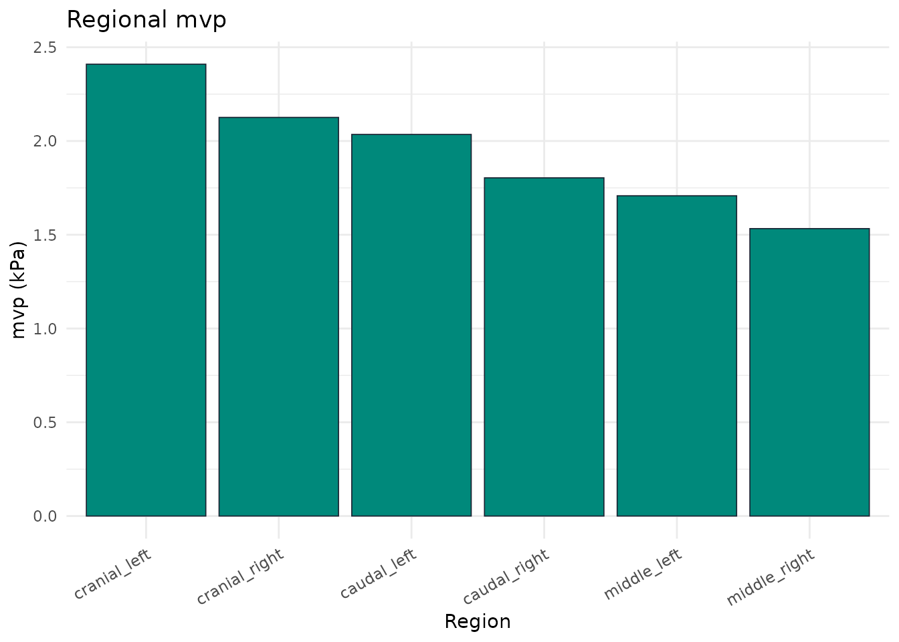

Equine Saddle Pressure Analysis with pressR
Source:vignettes/saddle-pressure-analysis.Rmd
saddle-pressure-analysis.Rmd


This vignette demonstrates descriptive saddle-pressure analysis using synthetic measurements. Source-specific observations are not universal diagnostic limits.
Load the saddle layout
layout <- pr_layout_saddle("horse")
names(layout$regions)
#> [1] "cranial_left" "cranial_right" "middle_left" "middle_right"
#> [5] "caudal_left" "caudal_right"Load a synthetic trial
trial <- pr_example_trial("saddle_horse")
trial
#>
#> ── pr_trial ────────────────────────────────────────────────────────────────────
#> • System: "saddle_mat"
#> • Layout: "saddle_horse"
#> • Frames: 500
#> • Duration: 9.98 s
#> • Sampling: 50 Hz
#> • Sensors: 248
#> • Subject: "HORSE01"
#> • Date: "2026-11-04"
#> • Condition: "walk"Regional analysis
masks <- pr_mask_saddle_6(layout)
reg <- pr_calc_regional(trial, masks)
reg
#> # A tibble: 6 × 6
#> region mpp mvp max_force contact_area pti_mean
#> <chr> <dbl> <dbl> <dbl> <dbl> <dbl>
#> 1 cranial_left 18.2 2.41 105. 320 17.7
#> 2 cranial_right 16.5 2.13 94.5 320 15.4
#> 3 middle_left 11.9 1.71 84.1 370 12.7
#> 4 middle_right 10.5 1.53 72.6 370 11.2
#> 5 caudal_left 18.3 2.03 113. 430 14.4
#> 6 caudal_right 15.4 1.80 98.5 410 12.6
pr_plot_regional_bar(reg, "mvp")
Bridge detection
bridge <- pr_calc_saddle_bridge(trial)
bridge
#>
#> ── Saddle Bridge Analysis ──
#>
#> • Bridge ratio: 0.774
#> • Bridging: FALSE
#> Pressure distribution appears continuous across the saddle (ratio = 0.77).Slip / asymmetric loading
slip <- pr_calc_saddle_slip(trial)
slip$symmetry_index_mean
#> [1] 10.97179
slip$dominant_side
#> [1] "balanced"Reference context and reproducibility
pr_ref_saddle() now attributes the six source
observations to Nyikos (2005). An overlay requires matching species,
gait and mask definitions recorded in
trial$metadata$reference_context; synthetic examples do not
establish that context. Unsupported legacy numeric entries are
withdrawn.
Novel Pliance files are detected by their header, including files
with a temporary upload name. The Novel layout retains grid coordinates
and unknown sensor area: force, physical contact area and millimetre
distances cannot be inferred. pr_summary_long() states
units and availability explicitly.
Use pr_temporal_profile(trial, "corrected") for measured
sampling and stable plateau handling. legacy_method repeats
the historical 50 Hz assumptions but cannot guarantee identical cycles
across numerical environments. Exact historical cycles must be bound to
the recording with pr_lock_cycles() and replayed with
pr_temporal_profile(trial, "reference", locked_cycles).
Reference phase maps use the central 80 percent of saved cycles and an
untrimmed mean.
Source
Nyikos S, et al. (2005). Pferdeheilkunde 21:187-198, abstract p.187. Original article.